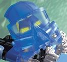
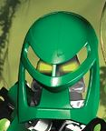
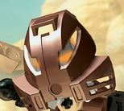
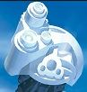

La leyenda
Esta es una historia sobre Bionicle. Los personajes viven en un robot del tamaño de un planeta llamado Matanui. El robot gigante es una de las muchas arcas que fueron creadas por los matoran para huir de su sistema de origen que estaba muriendo es adorado por sus habitantes como el gran espíritu. Ahora vaga por el espacio para conquistar nuevos mundos al igual que sus hermanos.
Los toa son como glóbulos blancos que protegen al robot en el que viven de distintas amenazas. Los Matoran trabajan reparando y construyendo. Algunos matorans son seleccionados para convertirse en toa. Los makuta son máquinas que crean nuevos robots para cumplir funciones como la recogida de residuos o el tratamiento de materiales. Los turaga son todos los que han cumplido su papel de héroes toa y ahora se dedican a guiar a las nuevas generaciones. Todas estas máquinas conviven dentro del robot como si fueran un gran ecosistema y hacen uso de máscaras que tienen poderes.
A veces surgen conflictos internos que provocan situaciones peligrosas. Pero todo esto no es nada comparado con la amenaza de otros robots gigantes que también fueron creados como arcas y que compiten por los recursos. Hace mucho tiempo Matanui fue dañado en una pelea con su hermano Teridax y ahora está aletargado en un planeta rodeado de agua. Los matoran que viven en el esperan el día en el que vuelva a resurgir y continue su mision.
Toas
Estos son los Toa mata:
| Imagen | Nombre | Habilidad |
|---|---|---|
 |
Tahu | Escudo |
|  | Gali | Respiración acuatica |
|  | Lewa | Levitación |
| Onua | Fuerza | |
|  | Pohatu | Velocidad |
|  | Kopaka | X-Ray |
| ... | ... | ... |